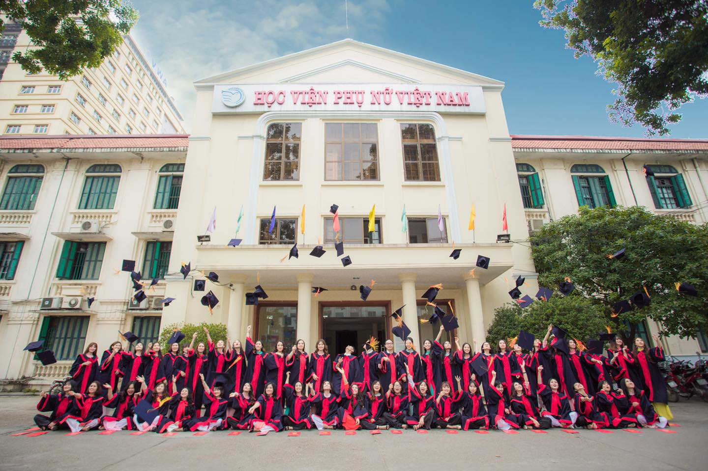
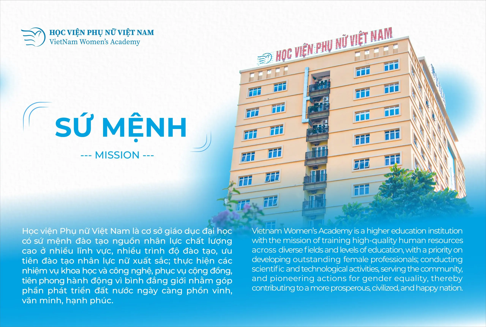
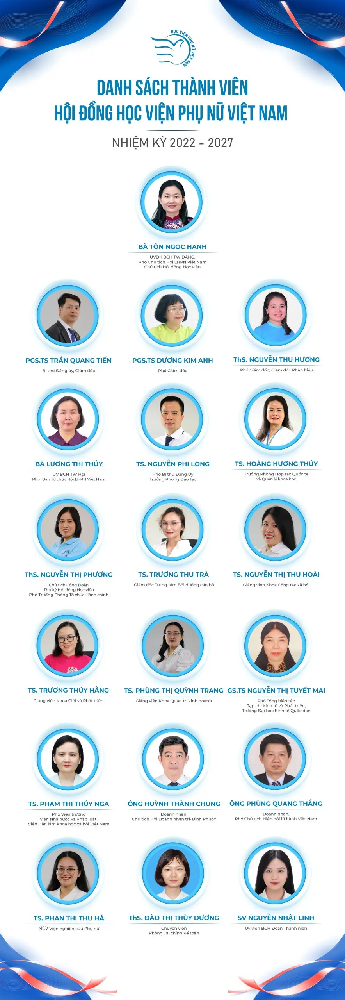

TỔNG QUAN VỀ HỌC VIỆN
Học viện Phụ nữ Việt Nam (Vietnam Women's Academy) là cơ sở giáo dục đại học công lập trực thuộc Hội Liên hiệp Phụ nữ Việt Nam.
Học viện chuyên đào tạo đa ngành trình độ cử nhân, thạc sĩ, tiến sĩ và là trung tâm bồi dưỡng cán bộ nữ, cán bộ Hội hàng đầu trong hệ thống chính trị.
Học viện sở hữu quy mô đào tạo hơn 7.000 người học bao gồm các hệ cử nhân, thạc sĩ và tiến sĩ.
Đối với hệ đại học chính quy, trường đang tuyển sinh và đào tạo 12 ngành học chính với các định hướng chương trình tiêu chuẩn và chất lượng cao:
• Nhóm Luật & Kinh tế: Luật, Luật Kinh tế, Kinh tế (Tiêu chuẩn & CLC), Kinh tế số.
• Nhóm Quản lý & Dịch vụ: Quản trị kinh doanh (Tiêu chuẩn & CLC), Marketing, Quản trị dịch vụ du lịch & lữ hành.
• Nhóm Công nghệ: Công nghệ thông tin (Tiêu chuẩn & Thiết kế/Phát triển Games).
• Nhóm Xã hội & Nhân văn: Giới và Phát triển, Công tác xã hội, Tâm lý học, Truyền thông đa phương tiện.
Học phí: Thuộc nhóm trường công lập có mức học phí rất hợp lý và ổn định, dao động từ khoảng 499.000đ - 630.000đ/tín chỉ tùy thuộc vào từng ngành đào tạo và cơ sở học tập.
Môi trường: Được sinh viên đánh giá là rất năng động, thân thiện với nhiều câu lạc bộ sáng tạo, hoạt động trải nghiệm thực tế và cơ hội săn học bổng trao đổi quốc tế.

LỊCH SỬ HÌNH THÀNH
Lịch sử hình thành Học viện Phụ nữ Việt Nam trải qua hành trình dài hơn 65 năm, gắn liền với phong trào phụ nữ và sự phát triển của cách mạng Việt Nam.
Dưới đây là các mốc lịch sử quan trọng đánh dấu sự phát triển của trường:
1. Giai đoạn 1960 – 2012: Thời kỳ Trường Cán bộ
• Ngày 8/3/1960: Ban Thường trực Trung ương Hội Liên hiệp Phụ nữ Việt Nam ra Quyết nghị thành lập Trường Phụ vận Trung ương. Đây là mốc thời gian khai sinh và được chọn làm ngày truyền thống của trường. Chức năng chính lúc này là đào tạo, bồi dưỡng nâng cao lý luận và nghiệp vụ công tác Hội cho đội ngũ cán bộ phụ nữ cả nước.
• Năm 1964: Để đáp ứng yêu cầu mới của phong trào cách mạng, trường được đổi tên thành Trường Cán bộ Phụ nữ Trung ương.
• Năm 2002: Nhà trường tiếp tục mở rộng quy mô, nâng cao năng lực giảng dạy và bắt đầu xây dựng đề án nâng cấp trường lên thành Học viện nhằm chuẩn hóa quy trình đào tạo đại học.
2. Giai đoạn 2012 – Nay: Thời kỳ Học viện Chính quy
• Ngày 18/10/2012: Thủ tướng Chính phủ ký Quyết định số 1558/QĐ-TTg chính thức thành lập Học viện Phụ nữ Việt Nam trên cơ sở nâng cấp Trường Cán bộ Phụ nữ Trung ương. Sự kiện này đánh dấu bước ngoặt đưa trường trở thành cơ sở giáo dục đại học công lập nằm trong hệ thống giáo dục quốc dân.
• Tháng 1/2013: Trường tiếp nhận và chuyển đổi cơ sở phía Nam thành Phân hiệu Học viện Phụ nữ Việt Nam tại Thành phố Hồ Chí Minh.
• Năm 2013: Học viện chính thức tuyển sinh khóa đại học chính quy đầu tiên (Khóa D1) với các ngành mũi nhọn như Công tác xã hội, Quản trị kinh doanh và Giới & Phát triển.
• Hiện nay: Qua hơn một thập kỷ lên mô hình Học viện, trường đã đạt quy mô đào tạo đa ngành với 12 ngành cử nhân, cùng các chương trình thạc sĩ và tiến sĩ, khẳng định vị thế vững chắc trong bảng xếp hạng đại học Việt Nam.

SỨ MỆNH
Học viện Phụ nữ Việt Nam là cơ sở giáo dục đại học có sứ mệnh:
• Đào tạo nguồn nhân lực chất lượng cao ở nhiều lĩnh vực, nhiều trình độ, trong đó ưu tiên đào tạo nhân lực nữ xuất sắc.
• Nghiên cứu khoa học, công nghệ và cung cấp các dịch vụ phục vụ cộng đồng.
• Tiên phong hành động vì sự tiến bộ của phụ nữ và bình đẳng giới, góp phần xây dựng đất nước phồn vinh, văn minh, hạnh phúc.
TẦM NHÌN ĐẾN NĂM 2045
Học viện hướng tới mục tiêu trở thành một trường đại học hiện đại sở hữu các tiêu chí:
• Mô hình cốt lõi: Trở thành "Đại học số – Đại học đổi mới sáng tạo xã hội".
• Tự chủ tài chính: Đạt mức độ tự chủ cao về năng lực tài chính và quản trị.
• Vị thế xếp hạng: Nằm trong nhóm 50% các trường đại học hàng đầu Việt Nam.
• Uy tín khu vực: Trở thành trung tâm đào tạo, nghiên cứu có tầm ảnh hưởng lớn về mảng phụ nữ, gia đình và bình đẳng giới tại Đông Nam Á.
GIÁ TRỊ CỐT LÕI
Học viện xây dựng văn hóa giáo dục dựa trên 4 giá trị nền tảng:
• Đoàn kết: Đồng lòng, kết nối sức mạnh tập thể giảng viên và người học.
• Chất lượng: Cam kết chuẩn đầu ra tối ưu, đáp ứng thực tế thị trường lao động.
• Bình đẳng: Tôn trọng sự khác biệt, thúc đẩy cơ hội phát triển ngang nhau cho mọi cá nhân.
• Đổi mới: Không ngừng sáng tạo, ứng dụng công nghệ và tư duy hiện đại vào giảng dạy.
TRIẾT LÝ GIÁO DỤC
"Giáo dục toàn diện, chất lượng và hiệu quả".
Học viện chú trọng phát triển đồng đều cả về kiến thức chuyên môn, kỹ năng thực tế lẫn đạo đức trách nhiệm với xã hội của sinh viên.


CƠ CẤU TỔ CHỨC
Cơ cấu tổ chức của Học viện Phụ nữ Việt Nam được xây dựng đồng bộ và chặt chẽ theo mô hình cơ sở giáo dục đại học công lập, chịu sự quản lý trực tiếp từ Hội Liên hiệp Phụ nữ Việt Nam.
Hệ thống bộ máy quản lý và đào tạo của Học viện bao gồm các thành phần cốt lõi sau:
1. Bộ máy quản trị và lãnh đạo
• Đảng ủy Học viện: Cơ sở hạt nhân chính trị trực thuộc Đảng ủy Trung ương Hội LHPN Việt Nam, giữ vai trò lãnh đạo toàn diện mọi hoạt động của trường.
• Hội đồng Học viện: Cơ quan quyền lực cao nhất quyết định về chiến lược, quy chế và định hướng phát triển. Hội đồng Học viện nhiệm kỳ 2022-2027 gồm 19 thành viên.
• Ban Giám đốc: Gồm Giám đốc và các Phó Giám đốc trực tiếp điều hành, quản lý hành chính và chuyên môn của Học viện.
• Hội đồng Khoa học và Đào tạo: Cơ quan tư vấn cho Giám đốc về chương trình giảng dạy, tuyển sinh và các đề tài nghiên cứu.
2. Các Khoa đào tạo chuyên môn
Học viện sở hữu hệ thống khoa đa dạng để quản lý khối ngành đại học và sau đại học:
• Khoa Giới và Phát triển
• Khoa Công tác xã hội
• Khoa Quản trị kinh doanh
• Khoa Luật Kinh tế
• Khoa Kinh tế
• Khoa Luật
• Khoa Khoa học cơ bản
• Khoa Công nghệ thông tin & Truyền thông đa phương tiện
3. Phòng chức năng, Viện và Trung tâm trực thuộc
• Phòng ban chức năng: Phòng Đào tạo, Phòng Tổ chức - Hành chính, Phòng Tài chính - Kế toán, Phòng Công tác sinh viên, Phòng Quản lý khoa học & Hợp tác quốc tế.
• Đơn vị sự nghiệp & Phục vụ: Viện Nghiên cứu Phụ nữ, Trung tâm Bồi dưỡng cán bộ, Trung tâm CNTT & Thư viện.
4. Đơn vị phụ thuộc (Phân hiệu phía Nam)
• Phân hiệu Học viện Phụ nữ Việt Nam tại Quận 9 (nay là TP. Thủ Đức), TP. Hồ Chí Minh. Cơ cấu tại phân hiệu bao gồm ban giám đốc phân hiệu, các phòng chức năng tương đương và tổ chức bồi dưỡng cán bộ cho khu vực phía Nam.
5. Các tổ chức chính trị - xã hội
• Công đoàn Học viện.
• Đoàn Thanh niên Cộng sản Hồ Chí Minh.
• Hội Sinh viên Học viện.
